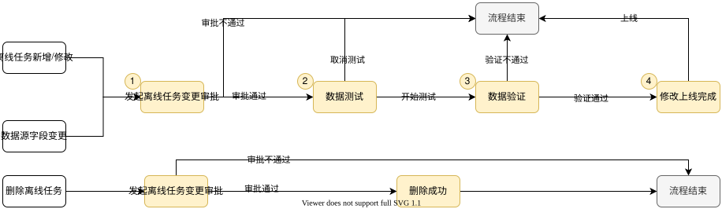

说明：离线引擎变更验证（废弃）
一、背景
- 离线引擎上线后，被越来越多的风险域使用，尤其是账号风险域的流量在快速增长，策略布控安全性日益凸显
- 当前离线任务的任何变更，都是立即生效，无验证、审批、监控、熔断等能力进行保障
二、系统流程

三、操作说明
当前为1.0版本功能，只有大象消息交互，平台暂无交互页面，交互页面将于2024Q1上线
当前功能只适用引擎V2架构，社区安全空间需迁移架构后使用
任务新增/变更
|
流程节点 |
说明 |
提交人通知 |
审批人通知 |
|---|---|---|---|
|
发起审批 |
|
仍存在流程未完成的离线任务 【Zeus离线引擎变更通知】 zhangsan发起的审批流程未完成，请确认流程结束后再发起新流程 正常提交 【Zeus离线引擎变更通知】 【变更类型】：数据源字段映射变更 审批人驳回后 【Zeus离线引擎变更通知】 【变更类型】：数据源字段映射变更 |
正常提交后审批人的通知 【Zeus离线引擎变更通知】 【变更类型】：数据源字段映射变更 通过 驳回 |
|
数据测试 |
|
审批人通过后 【Zeus离线引擎变更通知】 【变更类型】：数据源字段映射变更 开始测试 取消测试 点击开始测试 【Zeus离线引擎变更通知】 点击取消测试 【Zeus离线引擎变更通知】 【离线任务】：123,236 |
|
|
数据验证 |
|
系统执行测试完成-有数据 【Zeus离线引擎变更通知】 验证通过上线 验证不通过 系统执行测试完成-无数据 【Zeus离线引擎变更通知】 验证通过上线 验证不通过 点击验证不通过 【Zeus离线引擎变更通知】 【离线任务】：123 |
|
|
发布上线 |
|
点击验证通过上线 【Zeus离线引擎变更通知】 【变更类型】：数据源字段映射变更 |
任务删除
|
流程节点 |
说明 |
提交人通知 |
审批人通知 |
|---|---|---|---|
|
发起审批 |
|
正常提交 【Zeus离线引擎变更通知】 zhangsan发起的审批流程未完成，请确认流程结束后再发起新流程 【Zeus离线引擎变更通知】 【变更类型】：删除离线任务 审批人通过后 【Zeus离线引擎变更通知】 【变更类型】：删除离线任务 审批人驳回后 【Zeus离线引擎变更通知】 【变更类型】：删除离线任务 |
正常提交后审批人的通知 【Zeus离线引擎变更通知】 【变更类型】：删除离线任务 通过 驳回 |
宣讲视频
迁移架构：平台技术操作，业务同学配合观察即可